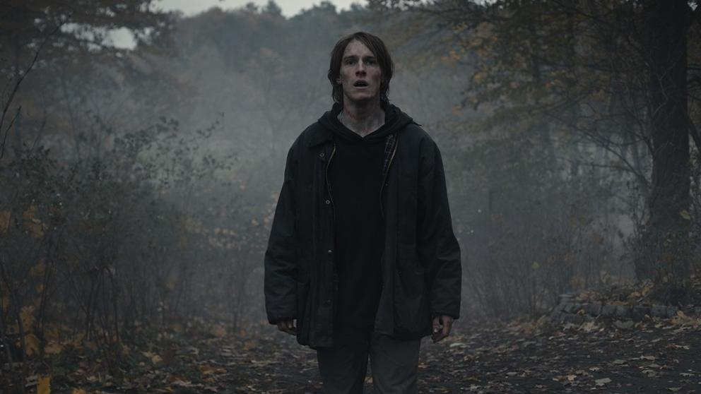

La serie 'Dark' ha revolucionado a millones de personas de todas partes del mundo. La creación de Baran bo Odar y el guión de Jantje Friese ha sido verdaderamente sensacional, al punto de que actualmente es considerada una de las mejores producciones de la historia. Si bien la trama es sensacional, la historia cuenta con mucha información estudiada por científicos, filósofos y especialistas sobre el tiempo y el espacio.Aunque muchos no lo crean, una curiosa escena clave de la serie sucedió en las últimas horas en Nueva México (Estados Unidos). Misteriosamente, millones de pájaros aparecierion muertos, por lo que rápidamente los especialistas comenzaron a estudiar el fenómeno.
En 'Dark', cuando los pájaros aparecían muertos, el significado era verdaderamente tenebroso: tenía que ver con que se aproximaba un apocalipsis. Sí, el que en la serie tuvo lugar el 27 de junio de 2020.
La noticia comenzó a darse a conocer a partir del video que publicó el periodista Austin Fisher, quien mostró un campo colmado de aves muertas durante la caminata que realizó el pasado 13 de septiembre. En un diálogo con The New York Times, comentó: "Nunca había visto tantos animales muertos en un solo lugar”.
A qué se debe la muerte de tantas aves: una de las hipótesis de los expertos tiene que ver con los incendios forestales que hubo durante el mes de agosto en la costa oeste de Estados Unidos. Por tal motivo, los pájaros tuvieron que emigrar sin la suficiente grasa en sus cuerpos para sobrevivir. Además, habrían sufrido problemas en los pulmones debido al humo que podrían haber inspirado. Martha Desmond, profesora del departamento de vida silvestre y ecología de conservación de la Universidad Estatal de Nuevo México, charló con CNN y comentó: "Podrían ser millones: un número sin precedentes. Puede estar relacionado con algunas de las condiciones de sequía. También podría estar relacionado con los incendios en el oeste. Es posible que estas aves hayan sufrido algún daño en los pulmones.
Es posible que el fuego los haya impulsado a volar antes de tiempo cuando no estaban listos para migrar o que las llamas destrozaron sus habituales fuentes de alimento y agua".